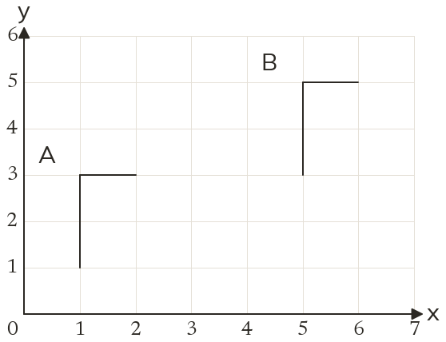

Westonbirt Maths · Transformations and Enlargements
Describing Transformations
Name: ______________________ Date: ____________
1
Describe fully the single transformation that maps A onto B.
2
Describe fully the single transformation that maps A onto B.
3
Describe fully the single transformation that maps A onto B.
4
About (0, 0), the point (3, 1) maps to (-1, 3) and (5, 2) maps to (-2, 5). Describe the transformation fully.
5
Is 'a rotation of 90° about (2, 1)' a complete description? Explain.
Ext
The point (2, 7) maps to (7, 2). Give two different single transformations that could do this.
